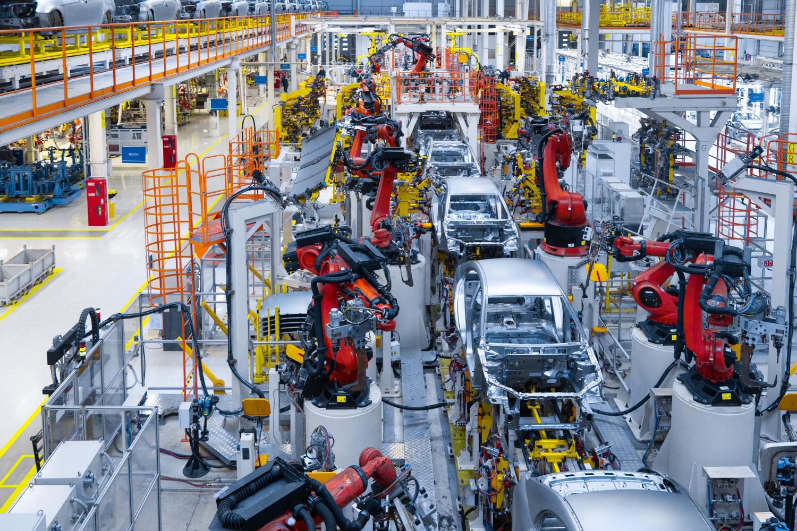

FAURECIA TERNI
La seconda realtà manifatturiera più grande della provincia, specializzata nella produzione di sistemi di scarico e catalizzatori per il mercato premium europeo.
Faurecia Emissions Control Technologies Italy S.r.l. (P.IVA 00738110550) ha sede in Via Bruno Capponi 45, 05100 Terni, ed è specializzata nella produzione di impianti di scarico, catalizzatori e sistemi di controllo delle emissioni per il segmento premium del mercato automobilistico europeo.
Fondata il 14 ottobre 1997, è controllata dal gruppo francese Forvia (fusione Faurecia–Hella, 2022) — sesto maggiore fornitore automotive al mondo. Con un fatturato di ~296 milioni di euro nel 2023, è la seconda azienda per fatturato dell'intera provincia di Terni, dopo Acciai Speciali Terni (AST).
Il prodotto principale — marmitte, flex-pipe e convertitori catalitici in acciaio inossidabile AISI 304/441 — riduce le emissioni nocive dei gas di scarico. Qui nasce il paradosso ecologico: il processo industriale che li crea genera a sua volta emissioni, rifiuti speciali e consumi energetici significativi.
